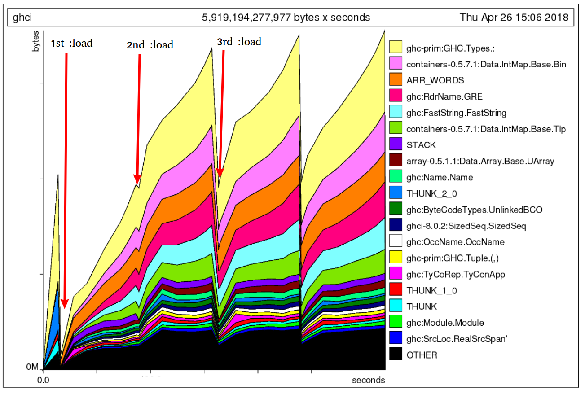

Fixing 17 space leaks in GHCi, and keeping them fixed
June 20, 2018In this post I want to tackle a couple of problems that have irritated me from time to time when working with Haskell.
GHC provides some powerful tools for debugging space leaks, but sometimes they’re not enough. The heap profiler shows you what’s in the heap, but it doesn’t provide detailed visibility into the chain of references that cause a particular data structure to be retained. Retainer profiling was supposed to help with this, but in practice it’s pretty hard to extract the signal you need - retainer profiling will show you one relationship at a time, but you want to see the whole chain of references.
Once you’ve fixed a space leak, how can you write a regression test for it? Sometimes you can make a test case that will use
O(n)memory if it leaks instead ofO(1), and then it’s straightforward. But what if your leak is only a constant factor?
We recently noticed an interesting space leak in GHCi. If we loaded a set of modules, and then loaded the same set of modules again, GHCi would need twice as much memory as just loading the modules once. That’s not supposed to happen - GHCi should release whatever data it was holding about the first set of modules when loading a new set. What’s more, after further investigation we found that this effect wasn’t repeated the third time we loaded the modules; only one extra set of modules was being retained.

Conventional methods for finding the space leak were not helpful in this case. GHCi is a complex beast, and just reproducing the problem proved difficult. So I decided to try a trick I’d thought about for a long time but never actually put into practice: using GHC’s weak pointers to detect data that should be dead, but isn’t.
Weak pointers can detect space leaks
The System.Mem.Weak library provides operations for creating “weak” pointers. A weak pointer is a reference to an object that doesn’t keep the object alive. If we have a weak pointer, we can attempt to dereference it, which will either succeed and return the value it points to, or it will fail in the event that the value has been garbage collected. So a weak pointer can detect when things are garbage collected, which is exactly what we want for detecting space leaks.
Here’s the idea:
- Call
mkWeakPtr v Nothingwherevis the value you’re interested in. - Wait until you believe
vshould be garbage. - Call
System.Mem.performGCto force a full GC. - Call
System.Mem.Weak.deRefWeakon the weak pointer to see ifvis alive or not.
Here’s how I
implemented this for GHCi. One thing to note is that just because
v was garbage-collected doesn’t mean that there aren’t still pieces
of v being retained, so you might need to have several weak pointers
to different components of v, like I did in the GHC patch. These
really did detect multiple different space leaks.
This patch reliably detected leaks in trivial examples, including many of the tests in GHCi’s own test suite. That meant we had a way to reproduce the problem without having to use unpredictable measurement methods like memory usage or heap profiles. This made it much easier to iterate on finding the problems.
Back to the space leaks in GHCi
That still leaves us with the problem of how to actually diagnose the
leak and find the cause. Here the techniques are going to get a bit
more grungy: we’ll use gdb to poke around in the heap at runtime,
along with some custom utilities in the GHC runtime to help us search
through the heap.
To set things up for debugging, we need to
- Compile GHC with
-gand-debug, to add debugging info to the binary and debugging functionality to the runtime, respectively. - load up GHCi in gdb (that’s a bit fiddly and I won’t go into the details here),
- Set things up to reproduce the test case.
*Main> :l
Ok, no modules loaded.
-fghci-leak-check: Linkable is still alive!
Prelude>The -fghci-leak-check code just spat out a message when it
detected a leak. We can Ctrl-C to break into gdb:
Program received signal SIGINT, Interrupt.
0x00007ffff17c05b3 in __select_nocancel ()
at ../sysdeps/unix/syscall-template.S:84
84 ../sysdeps/unix/syscall-template.S: No such file or directory.Next I’m going to search the heap for instances of the LM
constructor, which corresponds to the Linkable type that the leak
detector found. There should be none of these alive, because the :l
command tells GHCi to unload everything, so any LM
constructors we find must be leaking:
(gdb) p findPtr(ghc_HscTypes_LM_con_info,1)
0x4201a073d8 = ghc:HscTypes.LM(0x4201a074b0, 0x4201a074c8, 0x4201a074e2)
-->
0x4200ec2000 = WEAK(key=0x4201a073d9 value=0x4201a073d9 finalizer=0x7ffff2a077d0)
0x4200ec2000 = WEAK(key=0x4201a073d9 value=0x4201a073d9 finalizer=0x7ffff2a077d0)
0x42017e2088 = ghc-prim:GHC.Types.:(0x4201a073d9, 0x7ffff2e9f679)
0x42017e2ae0 = ghc-prim:GHC.Types.:(0x4201a073d9, 0x7ffff2e9f679)
$1 = voidThe findPtr function comes from the RTS, it’s a function designed
specifically for searching through the heap for things from inside
gdb. I asked it to search for ghc_HscTypes_LM_con_info,
which is the info pointer for the LM constructor - every
instance of that constructor will have this pointer as its first word.
The findPtr function doesn’t just search for objects in the heap, it
also attempts to find the object’s parent, and will continue tracing
back through the chain of ancestors until it finds multiple parents.
In this case, it found a single LM constructor, which had four
parents: two WEAK objects and two ghc-prim:GHC.Types.: objects,
which are the list constructor (:). The WEAK objects we know
about: those are the weak pointers used by the leak-checking code. So
we need to trace the parents of the other objects, which we can do with
another call to findPtr:
(gdb) p findPtr(0x42017e2088,1)
0x42016e9c08 = ghc:Linker.PersistentLinkerState(0x42017e2061, 0x7ffff3c2bc63, 0x42017e208a, 0x7ffff2e9f679, 0x42016e974a, 0x7ffff2e9f679)
-->
0x42016e9728 = THUNK(0x7ffff74790c0, 0x42016e9c41, 0x42016e9c09)
-->
0x42016e9080 = ghc:Linker.PersistentLinkerState(0x42016e9728, 0x7ffff3c2e7bb, 0x7ffff2e9f679, 0x7ffff2e9f679, 0x42016e974a, 0x7ffff2e9f679)
-->
0x4200dbe8a0 = THUNK(0x7ffff7479138, 0x42016e9081, 0x42016e90b9, 0x42016e90d1, 0x42016e90e9)
-->
0x42016e0b00 = MVAR(head=END_TSO_QUEUE, tail=END_TSO_QUEUE, value=0x4200dbe8a0)
-->
0x42016e0828 = base:GHC.MVar.MVar(0x42016e0b00)
-->
0x42016e0500 = MUT_VAR_CLEAN(var=0x42016e0829)
-->
0x4200ec6b80 = base:GHC.STRef.STRef(0x42016e0500)
-->
$2 = voidThis time we traced through several objects, until we came to an
STRef, and findPtr found no further parents. Perhaps the next
parent is a CAF (a top-level thunk) which findPtr won’t find because
it only searches the heap. Anyway, in the chain we have two
PersistentLinkerState objects, and some THUNKs - it looks like
perhaps we’re holding onto an old version of the
PersistentLinkerState, which contains the leaking Linkable object.
Let’s pick one THUNK and take a closer look.
(gdb) p4 0x42016e9728
0x42016e9740: 0x42016e9c09
0x42016e9738: 0x42016e9c41
0x42016e9730: 0x0
0x42016e9728: 0x7ffff74790c0 <sorW_info>The p4 command is just a macro for dumping memory (you can get these
macros from here).
The header of the object is 0x7ffff74790c0 <sorW_info>, which is just a
compiler-generated symbol. How can we find out what code this object
corresponds to? Fortunately, GHC’s new -g option generates DWARF
debugging information which gdb can understand, and because we
compiled GHC itself with -g we can get gdb to tell us what code
this address corresponds to:
(gdb) list *0x7ffff74790c0
0x7ffff74790c0 is in sorW_info (compiler/ghci/Linker.hs:1129).
1124
1125 itbl_env' = filterNameEnv keep_name (itbl_env pls)
1126 closure_env' = filterNameEnv keep_name (closure_env pls)
1127
1128 new_pls = pls { itbl_env = itbl_env',
1129 closure_env = closure_env',
1130 bcos_loaded = remaining_bcos_loaded,
1131 objs_loaded = remaining_objs_loaded }
1132
1133 return new_plsIn this case it told us that the object corresponds to line 1129 of
compiler/ghci/Linker.hs. This is all part of the function
unload_wkr, which is part of the code for unloading compiled
code in GHCi. It looks like we’re on the right track.
Now, -g isn’t perfect - the line it pointed to isn’t actually a
thunk. But it’s close: the line it points to refers to closure_env' which is defined on line 1126, and it is
indeed a thunk. Moreover, we can see that it has a reference to pls,
which is the original PersistentLinkerState before the unloading
operation.
To avoid this leak, we could pattern-match on pls eagerly rather
than doing the lazy record selection (closure_env pls) in the
definition of closure_env'. That’s exactly what I did to fix this
particular leak, as you can see in the patch that fixes
it.
Fixing one leak isn’t necessarily enough: the data structure might be retained in multiple different ways, and it won’t be garbage collected until all the references are squashed. In total I found
- 7 leaks in GHCi that were collectively responsible for the original leak, and
- A further 10 leaks that only appeared when GHC was compiled without optimisation. (It seems that GHC’s optimiser is pretty good at fixing space leaks by itself)
You might ask how anyone could have found these without undergoing this complicated debugging process. And whether there are more lurking that we haven’t found yet. These are really good questions, and I don’t have a good answer for either. But at least we’re in a better place now:
- The leaks are fixed, and we have a regression test to prevent them being reintroduced.
- If you happen to write a patch that introduces a leak, you’ll know what the patch is, so you have a head start in debugging it.
Could we do better?
Obviously this is all a bit painful and we could definitely build
better tools to make this process easier. Perhaps something based on
heap-view which was recently added to
GHC? I’d love to see someone tackle this.